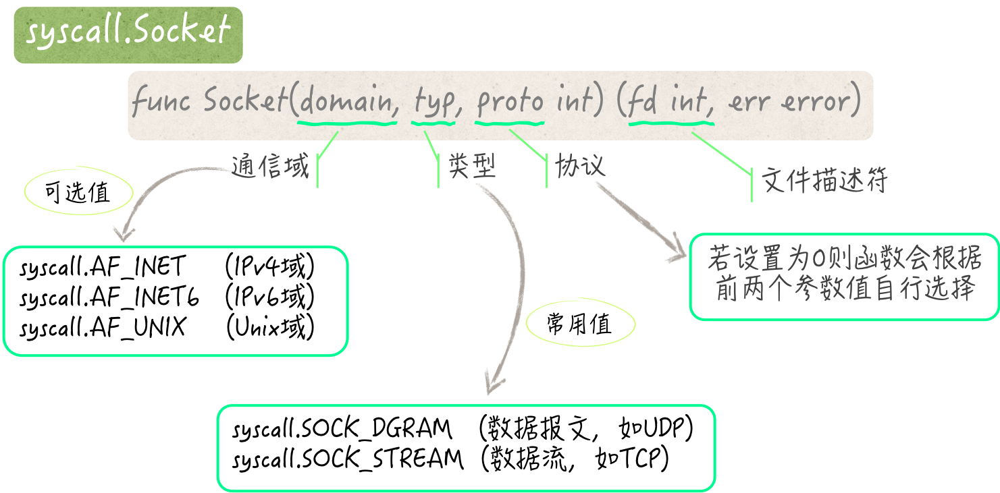

- 00 导读 写给0基础入门的Go语言学习者.md.html
- 00 导读 学习专栏的正确姿势.md.html
- 00 开篇词 跟着学，你也能成为Go语言高手.md.html
- 01 工作区和GOPATH.md.html
- 02 命令源码文件.md.html
- 03 库源码文件.md.html
- 04 程序实体的那些事儿（上）.md.html
- 05 程序实体的那些事儿（中）.md.html
- 06 程序实体的那些事儿 （下）.md.html
- 07 数组和切片.md.html
- 08 container包中的那些容器.md.html
- 09 字典的操作和约束.md.html
- 10 通道的基本操作.md.html
- 11 通道的高级玩法.md.html
- 12 使用函数的正确姿势.md.html
- 13 结构体及其方法的使用法门.md.html
- 14 接口类型的合理运用.md.html
- 15 关于指针的有限操作.md.html
- 16 go语句及其执行规则（上）.md.html
- 17 go语句及其执行规则（下）.md.html
- 18 if语句、for语句和switch语句.md.html
- 19 错误处理（上）.md.html
- 20 错误处理 （下）.md.html
- 21 panic函数、recover函数以及defer语句 （上）.md.html
- 22 panic函数、recover函数以及defer语句（下）.md.html
- 23 测试的基本规则和流程 （上）.md.html
- 24 测试的基本规则和流程（下）.md.html
- 25 更多的测试手法.md.html
- 26 sync.Mutex与sync.RWMutex.md.html
- 27 条件变量sync.Cond （上）.md.html
- 28 条件变量sync.Cond （下）.md.html
- 29 原子操作（上）.md.html
- 30 原子操作（下）.md.html
- 31 sync.WaitGroup和sync.Once.md.html
- 32 context.Context类型.md.html
- 33 临时对象池sync.Pool.md.html
- 34 并发安全字典sync.Map （上）.md.html
- 35 并发安全字典sync.Map (下).md.html
- 36 unicode与字符编码.md.html
- 37 strings包与字符串操作.md.html
- 38 bytes包与字节串操作（上）.md.html
- 39 bytes包与字节串操作（下）.md.html
- 40 io包中的接口和工具 （上）.md.html
- 41 io包中的接口和工具 （下）.md.html
- 42 bufio包中的数据类型 （上）.md.html
- 43 bufio包中的数据类型（下）.md.html
- 44 使用os包中的API （上）.md.html
- 45 使用os包中的API （下）.md.html
- 46 访问网络服务.md.html
- 47 基于HTTP协议的网络服务.md.html
- 48 程序性能分析基础（上）.md.html
- 49 程序性能分析基础（下）.md.html
- 尾声 愿你披荆斩棘，所向无敌.md.html
- 新年彩蛋 完整版思考题答案.md.html
- 捐赠
46 访问网络服务
你真的很棒，已经跟着我一起从最开始初识Go语言，一步一步地走到了这里。
在这之前的几十篇文章中，我向你一点一点地介绍了很多Go语言的核心知识，以及一些最最基础的标准库代码包。我想，你已经完全有能力独立去做一些事情了。
为了激发你更多的兴趣，我还打算用几篇文章来说说Go语言的网络编程。不过，关于网络编程这个事情，恐怕早已庞大到用一两本专著都无法对它进行完整论述的地步了。
所以，我在这里说的东西只能算是个引子。只要这样能让你产生想去尝试的冲动，我就很开心了。
前导内容：socket与IPC
人们常常会使用Go语言去编写网络程序（当然了，这方面也是Go语言最为擅长的事情）。说到网络编程，我们就不得不提及socket。
socket，常被翻译为套接字，它应该算是网络编程世界中最为核心的知识之一了。关于socket，我们可以讨论的东西太多了，因此，我在这里只围绕着Go语言向你介绍一些关于它的基础知识。
所谓socket，是一种IPC方法。IPC是Inter-Process Communication的缩写，可以被翻译为进程间通信。顾名思义，IPC这个概念（或者说规范）主要定义的是多个进程之间，相互通信的方法。
这些方法主要包括：系统信号（signal）、管道（pipe）、套接字 （socket）、文件锁（file lock）、消息队列（message queue）、信号灯（semaphore，有的地方也称之为信号量）等。现存的主流操作系统大都对IPC提供了强有力的支持，尤其是socket。
你可能已经知道，Go语言对IPC也提供了一定的支持。
比如，在os代码包和os/signal代码包中就有针对系统信号的API。
又比如，os.Pipe函数可以创建命名管道，而os/exec代码包则对另一类管道（匿名管道）提供了支持。对于socket，Go语言与之相应的程序实体都在其标准库的net代码包中。
毫不夸张地说，在众多的IPC方法中，socket是最为通用和灵活的一种。与其他的IPC方法不同，利用socket进行通信的进程，可以不局限在同一台计算机当中。
实际上，通信的双方无论存在于世界上的哪个角落，只要能够通过计算机的网卡端口以及网络进行互联，就可以使用socket。
支持socket的操作系统一般都会对外提供一套API。跑在它们之上的应用程序利用这套API，就可以与互联网上的另一台计算机中的程序、同一台计算机中的其他程序，甚至同一个程序中的其他线程进行通信。
例如，在Linux操作系统中，用于创建socket实例的API，就是由一个名为socket的系统调用代表的。这个系统调用是Linux内核的一部分。
所谓的系统调用，你可以理解为特殊的C语言函数。它们是连接应用程序和操作系统内核的桥梁，也是应用程序使用操作系统功能的唯一渠道。
在Go语言标准库的syscall代码包中，有一个与这个socket系统调用相对应的函数。这两者的函数签名是基本一致的，它们都会接受三个int类型的参数，并会返回一个可以代表文件描述符的结果。
但不同的是，syscall包中的Socket函数本身是平台不相关的。在其底层，Go语言为它支持的每个操作系统都做了适配，这才使得这个函数无论在哪个平台上，总是有效的。
Go语言的net代码包中的很多程序实体，都会直接或间接地使用到syscall.Socket函数。
比如，我们在调用net.Dial函数的时候，会为它的两个参数设定值。其中的第一个参数名为network，它决定着Go程序在底层会创建什么样的socket实例，并使用什么样的协议与其他程序通信。
下面，我们就通过一个简单的问题来看看怎样正确地调用net.Dial函数。
今天的问题是：net.Dial函数的第一个参数network有哪些可选值？
这道题的典型回答是这样的。
net.Dial函数会接受两个参数，分别名为network和address，都是string类型的。
参数network常用的可选值一共有9个。这些值分别代表了程序底层创建的socket实例可使用的不同通信协议，罗列如下。
"tcp"：代表TCP协议，其基于的IP协议的版本根据参数address的值自适应。"tcp4"：代表基于IP协议第四版的TCP协议。"tcp6"：代表基于IP协议第六版的TCP协议。"udp"：代表UDP协议，其基于的IP协议的版本根据参数address的值自适应。"udp4"：代表基于IP协议第四版的UDP协议。"udp6"：代表基于IP协议第六版的UDP协议。"unix"：代表Unix通信域下的一种内部socket协议，以SOCK_STREAM为socket类型。"unixgram"：代表Unix通信域下的一种内部socket协议，以SOCK_DGRAM为socket类型。"unixpacket"：代表Unix通信域下的一种内部socket协议，以SOCK_SEQPACKET为socket类型。
问题解析
为了更好地理解这些可选值的深层含义，我们需要了解一下syscall.Socket函数接受的那三个参数。
我在前面说了，这个函数接受的三个参数都是int类型的。这些参数所代表的分别是想要创建的socket实例通信域、类型以及使用的协议。
Socket的通信域主要有这样几个可选项：IPv4域、IPv6域和Unix域。
我想你应该能够猜出IPv4域、IPv6域的含义，它们对应的分别是基于IP协议第四版的网络，和基于IP协议第六版的网络。
现在的计算机网络大都是基于IP协议第四版的，但是由于现有IP地址的逐渐枯竭，网络世界也在逐步地支持IP协议第六版。
Unix域，指的是一种类Unix操作系统中特有的通信域。在装有此类操作系统的同一台计算机中，应用程序可以基于此域建立socket连接。
以上三种通信域分别可以由syscall代码包中的常量AF_INET、AF_INET6和AF_UNIX表示。
Socket的类型一共有4种，分别是：SOCK_DGRAM、SOCK_STREAM、SOCK_SEQPACKET以及SOCK_RAW。syscall代码包中也都有同名的常量与之对应。前两者更加常用一些。
SOCK_DGRAM中的“DGRAM”代表的是datagram，即数据报文。它是一种有消息边界，但没有逻辑连接的非可靠socket类型，我们熟知的基于UDP协议的网络通信就属于此类。
有消息边界的意思是，与socket相关的操作系统内核中的程序（以下简称内核程序）在发送或接收数据的时候是以消息为单位的。
你可以把消息理解为带有固定边界的一段数据。内核程序可以自动地识别和维护这种边界，并在必要的时候，把数据切割成一个一个的消息，或者把多个消息串接成连续的数据。如此一来，应用程序只需要面向消息进行处理就可以了。
所谓的有逻辑连接是指，通信双方在收发数据之前必须先建立网络连接。待连接建立好之后，双方就可以一对一地进行数据传输了。显然，基于UDP协议的网络通信并不需要这样，它是没有逻辑连接的。
只要应用程序指定好对方的网络地址，内核程序就可以立即把数据报文发送出去。这有优势，也有劣势。
优势是发送速度快，不长期占用网络资源，并且每次发送都可以指定不同的网络地址。
当然了，最后一个优势有时候也是劣势，因为这会使数据报文更长一些。其他的劣势有，无法保证传输的可靠性，不能实现数据的有序性，以及数据只能单向进行传输。
而SOCK_STREAM这个socket类型，恰恰与SOCK_DGRAM相反。它没有消息边界，但有逻辑连接，能够保证传输的可靠性和数据的有序性，同时还可以实现数据的双向传输。众所周知的基于TCP协议的网络通信就属于此类。
这样的网络通信传输数据的形式是字节流，而不是数据报文。字节流是以字节为单位的。内核程序无法感知一段字节流中包含了多少个消息，以及这些消息是否完整，这完全需要应用程序自己去把控。
不过，此类网络通信中的一端，总是会忠实地按照另一端发送数据时的字节排列顺序，接收和缓存它们。所以，应用程序需要根据双方的约定去数据中查找消息边界，并按照边界切割数据，仅此而已。
syscall.Socket函数的第三个参数用于表示socket实例所使用的协议。
通常，只要明确指定了前两个参数的值，我们就无需再去确定第三个参数值了，一般把它置为0就可以了。这时，内核程序会自行选择最合适的协议。
比如，当前两个参数值分别为syscall.AF_INET和syscall.SOCK_DGRAM的时候，内核程序会选择UDP作为协议。
又比如，在前两个参数值分别为syscall.AF_INET6和syscall.SOCK_STREAM时，内核程序可能会选择TCP作为协议。
- （syscall.Socket函数一瞥）
不过，你也看到了，在使用net包中的高层次API的时候，我们连那前两个参数值都无需给定，只需要把前面罗列的那些字符串字面量的其中一个，作为network参数的值就好了。
当然，如果你在使用这些API的时候，能够想到我在上面说的这些基础知识的话，那么一定会对你做出正确的判断和选择有所帮助。
知识扩展
问题1：调用net.DialTimeout函数时给定的超时时间意味着什么？
简单来说，这里的超时时间，代表着函数为网络连接建立完成而等待的最长时间。这是一个相对的时间。它会由这个函数的参数timeout的值表示。
开始的时间点几乎是我们调用net.DialTimeout函数的那一刻。在这之后，时间会主要花费在“解析参数network和address的值”，以及“创建socket实例并建立网络连接”这两件事情上。
不论执行到哪一步，只要在绝对的超时时间达到的那一刻，网络连接还没有建立完成，该函数就会返回一个代表了I/O操作超时的错误值。
值得注意的是，在解析address的值的时候，函数会确定网络服务的IP地址、端口号等必要信息，并在需要时访问DNS服务。
另外，如果解析出的IP地址有多个，那么函数会串行或并发地尝试建立连接。但无论用什么样的方式尝试，函数总会以最先建立成功的那个连接为准。
同时，它还会根据超时前的剩余时间，去设定针对每次连接尝试的超时时间，以便让它们都有适当的时间执行。
再多说一点。在net包中还有一个名为Dialer的结构体类型。该类型有一个名叫Timeout的字段，它与上述的timeout参数的含义是完全一致的。实际上，net.DialTimeout函数正是利用了这个类型的值才得以实现功能的。
net.Dialer类型值得你好好学习一下，尤其是它的每个字段的功用以及它的DialContext方法。
总结
我们今天提及了使用Go语言进行网络编程这个主题。作为引子，我先向你介绍了关于socket的一些基础知识。socket常被翻译为套接字，它是一种IPC方法。IPC可以被翻译为进程间通信，它主要定义了多个进程之间相互通信的方法。
Socket是IPC方法中最为通用和灵活的一种。与其他的方法不同，利用socket进行通信的进程可以不局限在同一台计算机当中。
只要通信的双方能够通过计算机的网卡端口，以及网络进行互联就可以使用socket，无论它们存在于世界上的哪个角落。
支持socket的操作系统一般都会对外提供一套API。Go语言的syscall代码包中也有与之对应的程序实体。其中最重要的一个就是syscall.Socket函数。
不过，syscall包中的这些程序实体，对于普通的Go程序来说都属于底层的东西了，我们通常很少会用到。一般情况下，我们都会使用net代码包及其子包中的API去编写网络程序。
net包中一个很常用的函数，名为Dial。这个函数主要用于连接网络服务。它会接受两个参数，你需要搞明白这两个参数的值都应该怎么去设定。
尤其是network参数，它有很多的可选值，其中最常用的有9个。这些可选值的背后都代表着相应的socket属性，包括通信域、类型以及使用的协议。一旦你理解了这些socket属性，就一定会帮助你做出正确的判断和选择。
与此相关的一个函数是net.DialTimeout。我们在调用它的时候需要设定一个超时时间。这个超时时间的含义你是需要搞清楚的。
通过它，我们可以牵扯出这个函数的一大堆实现细节。另外，还有一个叫做net.Dialer的结构体类型。这个类型其实是前述两个函数的底层实现，值得你好好地学习一番。
以上，就是我今天讲的主要内容，它们都是关于怎样访问网络服务的。你可以从这里入手，进入Go语言的网络编程世界。
思考题
今天的思考题也与超时时间有关。在你调用了net.Dial等函数之后，如果成功就会得到一个代表了网络连接的net.Conn接口类型的值。我的问题是：怎样在net.Conn类型的值上正确地设定针对读操作和写操作的超时时间？
© 2019 - 2023 Liangliang Lee. Powered by gin and hexo-theme-book.